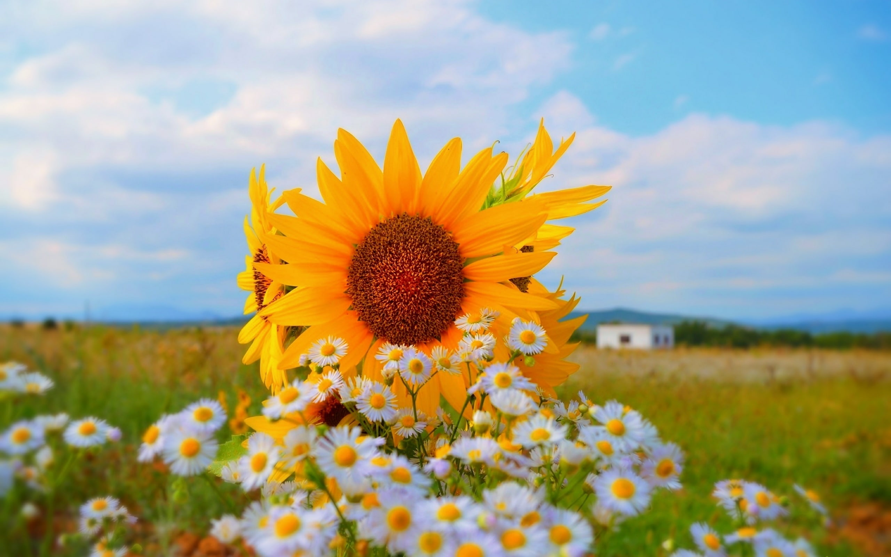
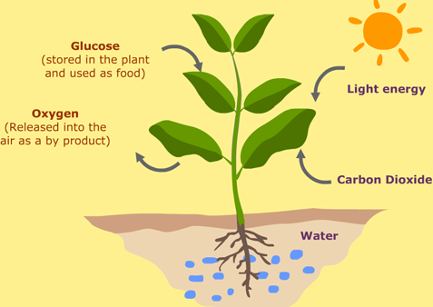

Pengenalan Fotosintesis

Fotosintesis merupakan proses pembentukan (sintesis) yang melibatkan cahaya (foto).
Atau jelasnya pemanfaatan energi cahaya matahari oleh tumbuhan berhijau daun atau bakteri
untuk mengubah karbondioksida dan air menjadi karbohidrat.
Perlu diketahui,
bahwa tidak hanya tumbuhan yang dapat melakukan fotosintesis.
Beberapa spesies bakteri, protista, dan alga juga dapat melakukan fotosintesis asalkan memiliki
pigmen warna yang dapat menyerap spektrum cahaya tampak, dari ungu hingga merah.
Pigmen warna tersebut tidak hanya klorofil yang berwarna hijau, Sobat.
Ada juga xantofil yang berwarna jingga dan karoten yang berwarna kuning.
Organisme yang dapat melakukan fotosintesis disebut sebagai organisme autotrof karena dapat membuat makanan sendiri berupa glukosa.
Proses Fotosintesis
- Dimulai pada malam hari, dari karbon dioksida yang diambil oleh mulut daun.
Tumbuhan juga mengambil air dari dalam tanah dengan menggunakan akarnya,
air tersebut kemudian dibawa oleh sistem transportasi pada tumbuhan,
yakni melalui jaringan xilem dan floem.
- Pada saat cahaya matahari muncul, klorofil pada tumbuhan
akan menyerap cahaya untuk digunakan sebagai energi utama dalam pembuatan
glukosa, glukosa yang dihasilkan dari proses fotosintesis tersebut akan
menjadi bahan bakar dasar
- bahan bakar dasar tersebut akan diolah kembali menjadi berbagai zat makanan
bagi tumbuhan, misalnya protein, lemak, dan lain sebagainya.
Namun, proses fotosintesis nyatanya terdiri dari dua rangkaian proses yang
diklasifikasikan berdasarkan kebutuhan cahaya dan tempat terjadinya, yakni reaksi
terang dan reaksi gelap.
- Reaksi terang adalah reaksi yang membutuhkan cahaya.
Reaksi ini terjadi pada bagian tilakoid daun, tepatnya di grana. Pada reaksi
terang terjadi proses fotolisis air atau pemecahan air dengan bantuan cahaya.
Klorofil akan menyerap energi cahaya matahari,memecah air (H2O), menghasilkan
oksigen (O2) dan energi berupa Adenosine Triphosphate (ATP).
Reaksi terang dibagi menjadi 2 yaitu :
- Reaksi nonsiklik : melibatkan fotosistem II (P680) elektron
akan ditangkap oleh P680 dan disalurkan ke fotosistem I (P700).
- Raksi Siklik : reaksi siklik terjadi apabila cahaya ditangkap oleh P700
kemudian elektron diteruskan ke akseptor elektron dan kembali ke P700.
Penamaan kedua fotosistem tersebut berdasarkan panjang gelombang optimal
yang dapat diserap, yakni 680 nm dan 700 nm, perbedaan yang lain yaitu
tahap siklik hanya menghasilkan ATP tanpa adanya proses pembentukan NADPH
- Reaksi gelap tidak memerlukan cahaya dan terjadi di bagian stroma.
Namun bukan berarti reaksi ini berhenti saat ada cahaya. Pada reaksi gelap,
terjadi proses yang dinamakan siklus Calvin-Benson yang merupakan reaksi
lanjutan dari reaksi terang, reaksi ini pertama kali ditemukan oleh
Melvin Calvin dan Andrew Benson sehingga disebut sebagai reaksi Calvin-Benson.
Reaksi gelap ini melibatkan enzim RuBisCO yang bertugas untuk menangkap O2 dari atmosfer.
Reaksi gelap ini akan menghasilkan 3-phosphoglyceraldehyde (PGAL) sebagai bahan dasar
pembentukan glukosa.
Bentuk Sederhananya Seperti Ini :

Manfaat Fotosisntesis
Tak hanya tumbuhan, manusia dan hewan juga turut merasakan manfaat dari fotosintesis,
dikarenakan manusia dan hewan mengonsumsi tumbuhan hijau, otomatis juga akan mendapatkan
manfaat seperti protein. Proses fotosintesis pada tumbuhan juga bermanfaat bagi lingkungan
karena membutuhkan karbon dioksida, fotosintesis yang dilakukan tumbuhan hijau, membantu
mengurangi kadar karbon dioksida yang terdapat di lingkungan sekitar.Fotosintesis juga menghasilkan oksigen yang dibutuhkan bagi manusia dan makhluk hidup lainnya
Faktor Yang Mempengaruhi Fotosintesis
- Konsentrasi karbon dioksida
Semakin banyak karbon dioksida di udara, makin banyak jumlah bahan yang dapat digunakan tumbuhan untuk melangsungkan fotosintesis.
- Suhu
Enzim-enzim yang bekerja dalam proses fotosintesis hanya dapat bekerja pada suhu optimalnya. Umumnya laju fotosintensis meningkat seiring dengan meningkatnya suhu hingga batas toleransi enzim.
- Kadar Air
Kekurangan air atau kekeringan menyebabkan stomata menutup, menghambat penyerapan karbon dioksida sehingga mengurangi laju fotosintesis.
- Fotosintat (hasil fotosintesis)
Jika kadar fotosintat seperti karbohidrat berkurang, laju fotosintesis akan naik. Bila kadar fotosintat bertambah atau bahkan sampai jenuh, laju fotosintesis akan berkurang.
- Pertumbuhan
Penelitian menunjukkan bahwa laju fotosintesis jauh lebih tinggi pada tumbuhan yang sedang berkecambah ketimbang tumbuhan dewasa. Hal ini mungkin dikarenakan tumbuhan berkecambah memerlukan lebih banyak energi dan makanan untuk tumbuh.
Back